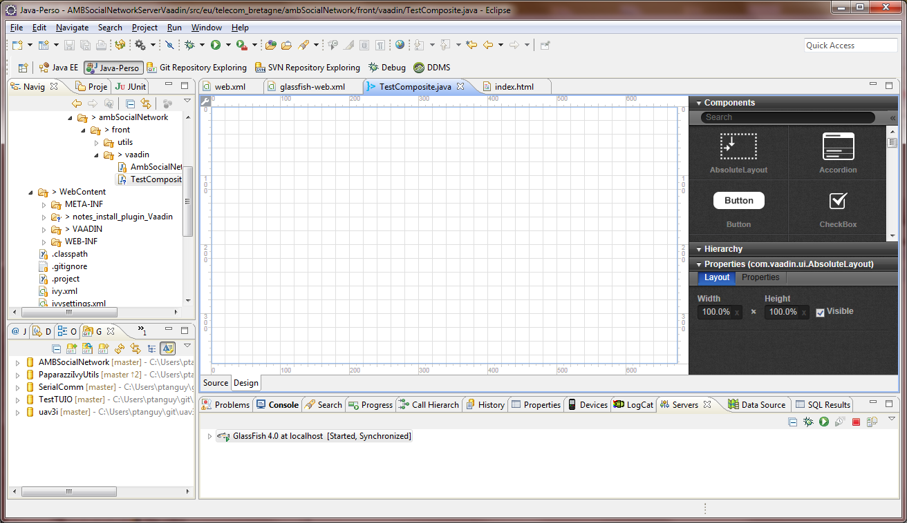
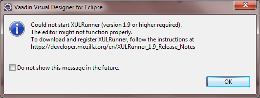

Notes sur l'installation du plugin Vaadin
Problème : l'éditeur graphique se s'affiche pas
Windows 7 x64
Eclipse Kepler x64, Java 1.7.0_45 x64
Plugin Vaadin 2.2
Le plugin nécessite l'utilisation de XULRunner pour fonctionner.

Solution
Description de la solution :
http://stackoverflow.com/questions/19381002/vaadin-visual-designer
Téléchargement de XULRunner :
http://sourceforge.net/projects/xulrunnerinstal/
Installation dans
C:\Program Files (x86)\Mozilla XULRunner
(choix par défaut)
Modification du fichier
eclipse.ini
(dans
C:\Program Files\eclipse-jee-kepler-R-win32-x86_64
)
Ajout en fin de fichier de la ligne :
-Dorg.eclipse.swt.browser.XULRunnerPath=C:\Program Files (x86)\Mozilla XULRunner
Au lancement, un message d'alerte s'affiche : cocher la case
Do not show this message in the future.
